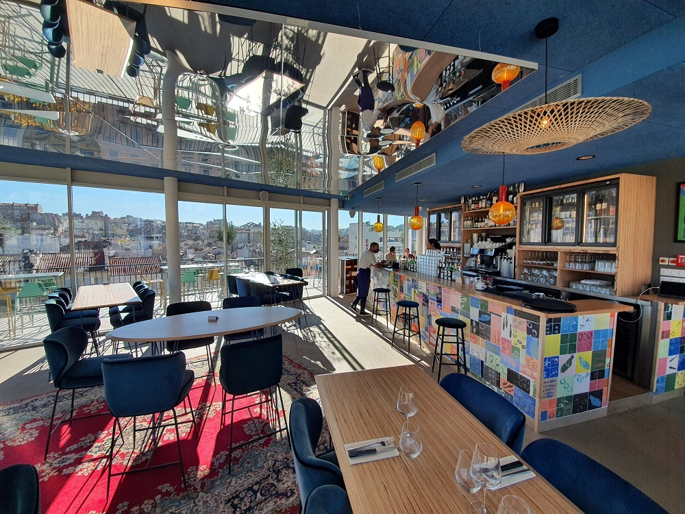
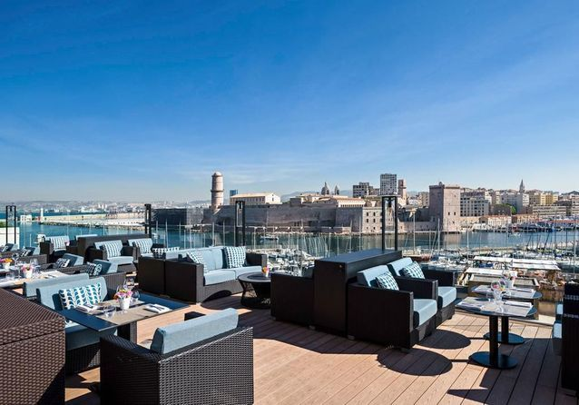
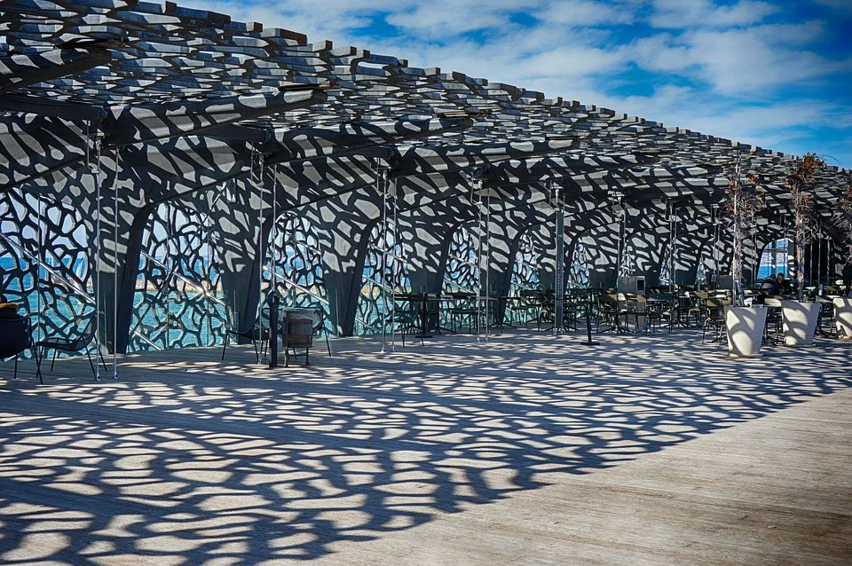
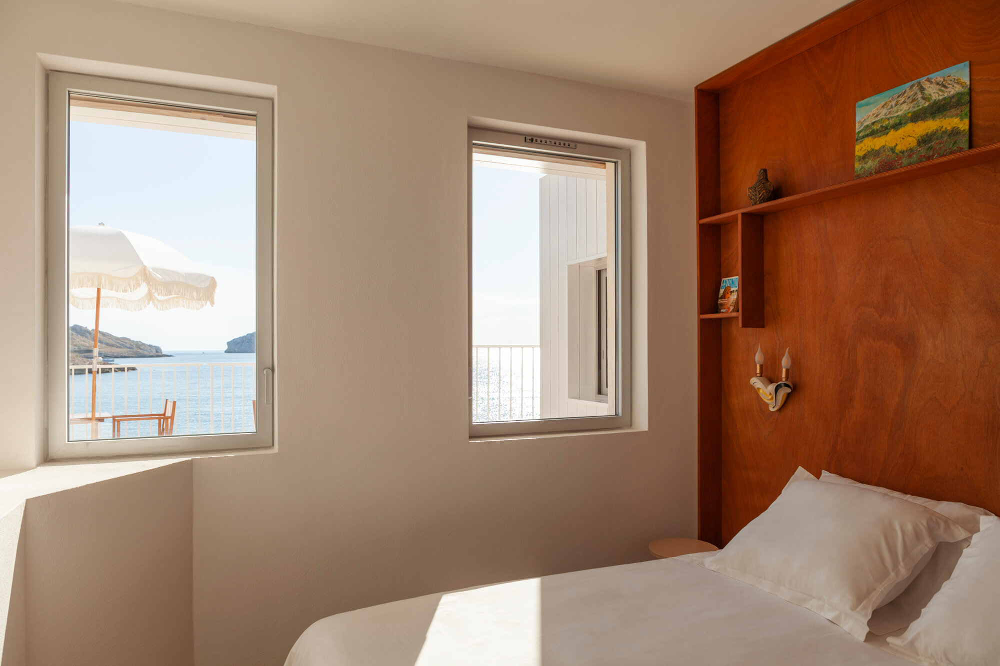

Sortir à Marseille !
Retrouvez ici nos idées sorties : bars, restaurants, cinémas, musées ...
Préparez votre séjour : entre amis, en famille... Parcourez la cité phocéenne.
Restauration

Nos plus belles adresses
Bars, pubs, cafés

Nos plus beaux endroits
Culture

Nos plus beaux dépaysements
Hôtels

Nos plus belles détentes
Musées, activités, bateaux
CityPass Marseille
Disponible en version 24, 48 ou 72h consécutives, c’est le pass indispensable pour profiter pleinement de votre séjour à Marseille !
Acheter mon CityPass !